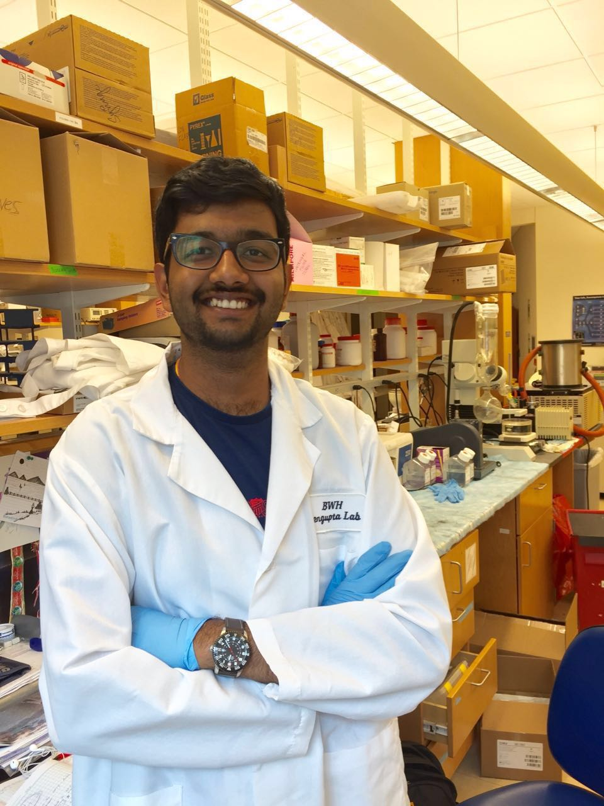
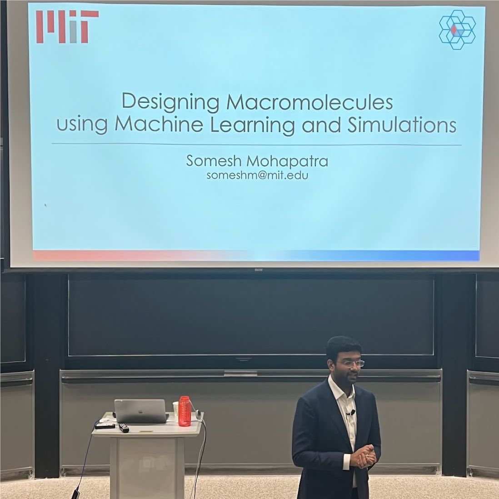
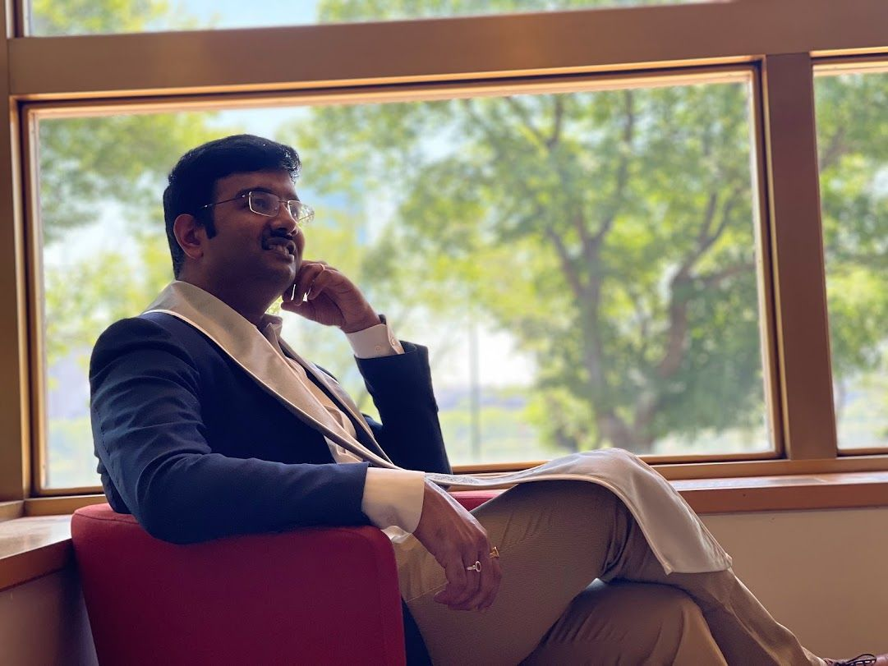

Rigor first
An MIT PhD designing molecules with graph neural networks, published in Nature Chemistry and ACS Central Science. I still read the paper before I buy the platform.
Scientist, builder, operator. I trained as an MIT machine-learning researcher, ran a startup, and now lead a 90+ person AI, data science and product organization putting digital twins and agentic AI to work across Caterpillar's global manufacturing.
A 22.6M-parameter language model runs in your browser to answer. Nothing you type leaves your device.
An MIT PhD designing molecules with graph neural networks, published in Nature Chemistry and ACS Central Science. I still read the paper before I buy the platform.
I prototype the digital twin assistant, the RAG pipeline and, yes, this site's in-browser model. Credibility with engineers is earned in code reviews.
Founder with a P&L, chief of staff in a $15B segment, and now an AI leader accountable for outcomes across 150+ facilities.
The model that predicted failures in a peptide synthesizer at MIT is a cousin of the one predicting failures on a Caterpillar line. Each role built a reusable asset the next one used.



Each project below is in production or shaped a capital decision. Numbers are the business outcome, not the model metric.
What I build on my own time, in the open. Digital twins, world models and on-device AI, each with a live site or source on GitHub.
A complete point of view across strategy, data foundations, context, the AI platform, agents, governance, economics, organization, adoption, the first year and the scorecard. Ten beliefs, twelve chapters, written to be argued with.
Published weekly on LinkedIn to 23,000+ followers. Browse all essays.
Somesh Mohapatra, PhD, MBA, is an AI, data science and product leader. He is Director of Analytics at Caterpillar Inc., where he leads a 90+ person organization building digital twins and agentic AI for global manufacturing. He holds a PhD in machine learning for molecular design from MIT and an MBA from MIT Sloan's Leaders for Global Operations program.
He is Director of Analytics and Head of Data Science and Product Management for Caterpillar's Modern Manufacturing digital platform, covering predictive maintenance, inventory, dynamic scheduling, connected assets and operational metrics across 150+ facilities. Earlier at Caterpillar he was chief of staff for strategy in the $15B Resource Industries segment, led minesite electrification analytics, and built ChatDocs, a GenAI platform for supplier contracts that earned the CEO Award.
He earned a PhD in machine learning for molecular design at MIT (2018 to 2022), advised by Prof. Rafael Gómez-Bombarelli, a dual-degree MBA from the MIT Sloan Leaders for Global Operations program, and a B.Tech from IIT Roorkee, where he won the Institute Gold Medal as rank 1 of 110.
His research applies machine learning to molecules, materials and manufacturing: graph representations of macromolecules (GLAMOUR), deep learning for peptide design and fast-flow peptide synthesis, and reaction impurity prediction for drug manufacturing. He has 15+ peer-reviewed papers, including two in Nature Chemistry and several in ACS Central Science, and a US patent application on AI-designed drug delivery peptides.
His playbook treats data and AI as a multiplier for the business a company already wants to become: start from the business's core learning problem, fix data foundations before models, run one governed AI platform with risk-tiered governance, grant agents autonomy per workflow, and measure decisions changed and value created rather than pilots launched.
He is glad to talk with leaders working on AI-driven transformation in manufacturing, supply chain and operations, about leadership roles, board advisory and speaking on enterprise AI and digital twins.
He is based in the Dallas–Fort Worth area of Texas and works across the US, UK and India. The best ways to reach him are email (from the contact section of someshmohapatra.in) or LinkedIn at linkedin.com/in/pikulsomesh.
I am glad to talk with leaders working on AI-driven transformation in manufacturing, supply chain and operations, about leadership roles, board advisory or speaking.